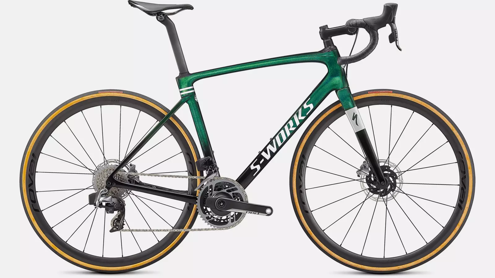
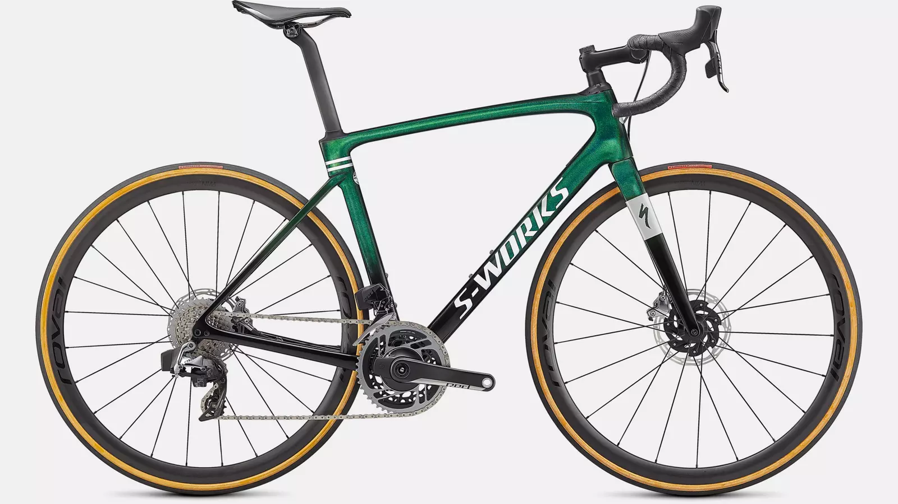

"장거리 주행용으로 설계된 엔듀런스 레이스 로드 자전거로 거친 지형에서도 웃음을 잃지 마세요.
루베의 자갈길에서 내면의 프로 정신을 발휘하든, 첫 번째 또는 열다섯 번째 솔로 센츄리에 도전하든,
현존하는 최고의 엔듀런스 로드 자전거로 하루를 보내는 것만큼 멋진 일은 없죠." - TREK 엔듀런스 로드에 대한 설명에서 발췌 -
엔듀런스 로드는 길만 있다면 어디든 돌파 해 나갈 수 있습니다.
파리-루베 대회에서 볼 수 있듯 이 자전거가 못가는 '길'은 없습니다.
범용성이 좋은 특징은 주변 상황에만 국한되지 않습니다.
다른 로드 자전거 처럼 속도에만 초점을 두지 않았지만, 로드의 DNA를 가진건 똑같습니다.
피로누적에 대비하여 라이더의 피로도를 생각하여 설계된 프레임은 두꺼운 타이어도 세팅 가능하기에
현존하는 수많은 로드 자전거 중 가장 타기 부담없는 자전거일 것 입니다.
엔듀런스 로드를 추천하는 타입 :
장거리 라이딩을 즐겨 하는 랜도너스형 라이더
로드 자전거를 타고는 싶지만 불편한 자세가 걱정되는 라이더
두꺼운 타이어를 끼고 노면 고민없이 타고 싶은 라이더
"Don't lose your laughter even in rough terrain with an Endurance Race Road bicycle designed for long-distance driving. Whether you're showing your inner professional spirit on Lube's gravel path or challenging your first or fifteenth solo centurion,
Nothing is as wonderful as spending the day on the best existing Endurance Road bike." - Excerpt from the description of TREK Endurance Load -
Endurance Road can break through anywhere as long as it has a road.
As you can see in the Paris-Rube competition, there is no "path" that this bicycle cannot go.
Features with good versatility are not limited to surrounding situations.
I didn't focus on speed like any other road bike, but it's the same with Rod's DNA.
The frame designed to consider the fatigue of the rider in preparation for the accumulation of fatigue can set thick tires, so
It is probably the easiest bicycle to ride among the numerous existing road bikes.
I recommend Endurance Road :
Landonus type rider who enjoys long-distance riding.
Rider wants to ride a road bike but is worried about uncomfortable posture.
Rider that you want to ride without worrying if you wear thick tires.
 
